Enhancing Spoken Connected Digit Recognition Accuracy by Error
Correction Codes - A Novel Scheme
Sunil K. Kopparapu and P. V. S. Rao1
Cognitive Systems Research Laboratory
Plot No 14, Sector 24, Vashi-Turbe,
Navi Mumbai 400 705
Email: {SunilKumar.Kopparapu, pvs.rao}@TataInfotech.Com
Enhancing the Accuracy of a Connected Spoken Digit Recognizer
Enhancing Spoken Connected Digit Recognition Accuracy by Error
Correction Codes - A Novel Scheme
Abstract:
Recognizing spoken connected digit numbers accurately is an important
problem and has very many applications. Though the state of the art
word recognition systems have gained acceptable accuracy levels
the accuracy of recognition of current connected
spoken digits (and other short words) is very poor. In this paper,
we develop a novel scheme to enhance the accuracy of recognizing a
connected number. The basic idea proposed in this paper is to increase the
number of digits in a number and use these appended digits to increase the
overall accuracy of recognizing the number, as is done in the error correcting
code literature. We further show that the developed scheme is able to uniquely
and exactly correct single digit errors.
Keywords: Connected Digit Recognition,
Spoken Number recognition, Error correcting codes
Error correcting codes are a well researched area and are often used
to take care of errors introduced when data streams are transmitted
from one place to another through some communication channel. Useful
and efficient error correcting codes have several objectives
- Detection and correction of errors introduced in the channel.
This is the most important objective of an error correcting code;
ideally one would like a code that is capable of correcting all errors
due to noise.
- Efficient transmission of data, so as to not waste time
sending extra data.
- Easy encoding and decoding schemes; this is also desirable for computational efficiency
In general, the more errors that a code needs to
correct per message digit, the less efficient the transmission and also
probably the more
complicated the encoding and decoding schemes. A good code balances these
objectives [Rosenquist, 2003].
Much of the study in the area of error correcting codes has been in
the area of binary block codes, meaning that the transmitted message
is encoded as a string of 1's and 0's and the code under consideration
is itself of constant length. Binary error correcting codes are
defined on a field 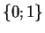 with addition, multiplication and
division operations. Non-binary linear codes have also been addressed
in literature, but are restricted to a field
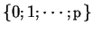,
where is a prime. Without going into specifics of different error
correcting codes, we might state that, broadly speaking, these have
the same components: the generator matrices; parity check matrices and
syndrome decoding.
Non-binary, non-prime information is often used to code information
such as postal code, bar code and ISBN2 library code to name a few.
For example, in character recognition systems decimal numbers are
popularly used (as in postal codes) and are processed directly, not
transformed to binary (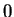's and  's) data. There are no good codes reported in
literature[Fujiwara, 2004] for cases where the number of
characters/symbols is not prime or a power of prime, for example, the
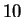 characters in decimal numbers
's) data. There are no good codes reported in
literature[Fujiwara, 2004] for cases where the number of
characters/symbols is not prime or a power of prime, for example, the
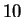 characters in decimal numbers
In this paper, we present a novel scheme to detect and correct single
digit (decimal number, hence non-binary and non-prime) errors. The
idea is to enhance the accuracy of recognition of connected spoken
digit recognition, which is otherwise very poor as reported in
literature and discussed elsewhere in this paper.
Speech as a medium is being increasingly used in human computer interface
applications. There has been a fair amount of success in terms of
accuracy of word based speech recognition systems and this has
led to speech recognition and speaker verification systems being deployed
in practical applications such as auto-attendant and personal
authentication
biometric systems.
Connected digit recognition is important and has use in several
application areas. Several applications (for example banks, courier or
postal agencies to track parcels, railway or travel agencies to confirm
reservations, b2c portals to give credit card numbers etc) have need
for a reliable connected digit recognizer. In addition, as speech
gains popularity as the medium for interaction between human and
computer,
and confidence of the users, most of the applications which earlier
used the telephone key pad to obtain numbers are being speech
enabled.
While word based (and even phoneme based) recognition systems have
reached acceptable accuracy levels, this can not be said of
recognition of connected digit numbers. For this reason, one does as
yet not find in the market systems which are able to reliably
recognize spoken connected digit numbers.
Current connected digit recognition systems for example,
[Buhrke, 1994]
and
[Kopec and Bush, 1985]
use sophisticated algorithms to recognize
spoken digit strings using whole word models. These algorithms are
generally based on maximum likelihood recognisers such as hidden
Markov modeling and neural networks. A good and a reliable connected
digit recognizer is therefore the need of the day.
In this paper, we describe a simple, yet novel scheme to increase the
recognition accuracy of a connected digit recognizer without
increasing the digit recognizing accuracy per se. The main idea
is to append extra digits and use the resulting longer number to
increase the accuracy of recognizing a connected digit number.
The accuracy of recognition of spoken connected digit
is low, even
though the accuracy of recognizing longer words has reached
acceptable levels.
This is due to several reasons; for example:
- spoken digits are of short acoustic duration, typically a few
seconds of speech,
- some digits are acoustically very similar to each other (for
example,
one and
nine) and
- detecting a connected number involves
identifying several individual digits that form the number; hence,
overall accuracy falls to a much lower level.
For
example, if the probability of recognizing a single digit(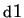)
correctly is 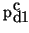,
then the probability of recognizing a connected number made up of 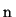
digits (represented by 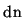) is
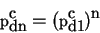
Figure 1:
Number recognition accuracy versus digit
recognition accuracy.
| 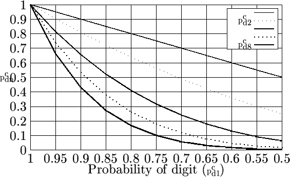 |
Clearly, connected word recognition accuracy is much poorer
compared to the individual digit recognition accuracy. Even a respectable
single digit accuracy of 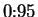 gives a 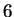
digit number recognition accuracy of
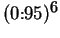 or only 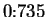! This paper discusses methods for
increasing this accuracy of
connected numbers, without actually increasing digit accuracy.
Figure 1 shows the probability of correctly recognizing
connected -digit numbers (for 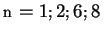) with increasing
single digit recognition
accuracy.
Consider a
spoken number made up of 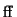 digits, that has to be recognized. Let
denote the probability of correct recognition of a single digit;
then
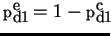 denotes the probability of error in
recognition of a single digit. Note that
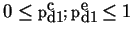. The
accuracy of recognition of a digit number (probability of correct
recognition of all the digits) is
Suppose we append extra digits
3
to the -digit number; then
the accuracy of recognition (probability of correctly recognizing all
the
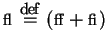 digits) of the number is
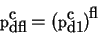
Clearly,
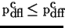. Adding extra digits reduces the
accuracy of number recognition (compare the curves corresponding to
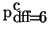 and
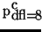 in
Figure
1). Note that the advantage of adding extra digits is
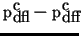 which is 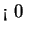.
Now, suppose the -digit number is constructed such
that it is possible to identify and correct exactly and only
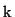 digits in
error in the -digit
number, then, the advantage of appending the extra digits to
the digit number, using the theory of binomial expansion, is
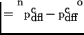
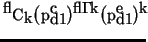.
Assuming that the ability to identify and correct digits in error
implies the ability to identify and correct or less digits in error, we
have
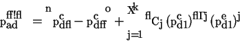
Figure 2:
Recognition advantage of using 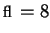 digits instead of 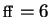 for
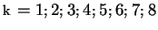 digits in error correction capability versus probability of single digit recognition
| 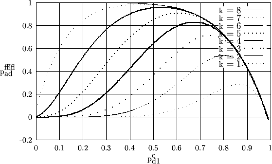 |
Figure 2 shows the recognition advantage derived due to
(
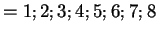) digits in error
correction capability for and . Notice in Figure
2 that
- for a given ,
peaks at
a certain value of .
This is because, for a given , the advantage due to error correction
capability is less for smaller values of as also for larger values
of , though for different reasons. For larger
there is more
probability of the digit number being recognized correctly even without
the error correction capability coming into picture, meaning less
advantage due to the error correcting capability. For smaller
there is a higher probability of
larger than (number of digits that can be corrected
by the error correction capability) digits being in error which renders the
error correcting capability useless. Somewhere in between, given by
(3),
the advantage of
using the error correcting capability peaks.
- the advantage derived by using the error correction capability
increases with increase in
(maximum value of
for
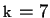 is greater than maximum value of
for
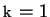) and
- the peak value of
for a given shifts to a lower with increasing .
This behavior is to be expected because with increasing
there is less chance of making an error and hence no advantage of
using the error detection and correction capability; but as
decreases there is more likelihood of more digits in the number being in error and hence the error
correction capability is advantageous.
Specifically
for single error digit correction (), the advantage of using
digits instead of digits is (Figure 3, for , and )
Figure 3:
Advantage of using digits instead of for single error digit
correction 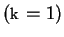 number recognition
versus probability of single digit recognition
| 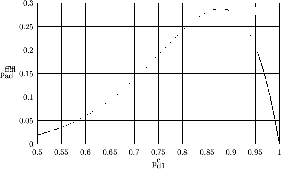 |
Clearly, there is a distinct advantage in using digits instead of
digits, provided the extra digits can be used to identify and correct
errors of digits or less.
Note _note
Figure
3 shows the plot of advantage of using
digits (with the capability of identifying and correcting error digit)
instead of , namely,
versus , the correct recognition of a single digit. Notice
from the plot that there is always an advantage (
is positive) of using digits instead
of digits provided we are able to identify and correct digits in
error.
In Section 4 we propose a
simple
yet novel scheme which is able to identify and correct such
errors by appending extra digits to the original digits.
It can be shown that,
the maximum increase in accuracy of recognition
(because of being able to detect and
identify error digits in an digit number) occurs at
and the maximum increase in probability of correct recognition is
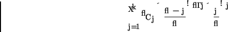
We show this in Appendix A, namely, the
resulting advantage in recognition due to digits in error correction.
Proposed Scheme
Consider the case where , namely a decimal number
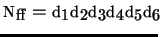,
where
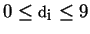. We append 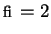 extra digits to generate an -digit
number
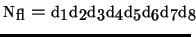.
The construction of 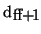 and 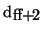 is as follows,
where,
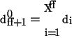
Also,
where
and
are chosen such that
As will be shown in this
paper, is used to identify a single error and to
locate the position of the error. The digits can be used to not
only detect a single error but also to identify the error; hence
all single digit errors can be corrected. We know from (4) that
Suppose, there is a single digit error
in recognizing and the transmitted number is
where,
. Now, find
where
If we knew , the position of the error, we can reconstruct as
where
Since we do not know the exact location of the error, namely , we
construct different numbers
where
and
Now, one of these is the correct number and
we are left with the task of selecting this;
namely choose one of
. We make use of the
construction of for this purpose. We first find,
for
and find
The correct value of is , when
The scheme for generating and correcting single errors is shown in Algorithm 1.
We need to show that that satisfies (13) is unique.
This can be shown in two steps, namely, showing that the error ()
and the location of the error are both
uniquely determinable.
Uniqueness of error identification:
We know that the error (9)
. It follows that
.
Now, one needs to show that,
given the erroneously recognized digit sequence,
and , one can
uniquely determine using (10).
We know that
(actual digit) and
 (misrecognized digit).
Consider
the condition that the digit
(misrecognized digit).
Consider
the condition that the digit
 is
misrecognized as
by the speech recognition engine.
We can compute the actual transmitted digit
from (10) as
is
misrecognized as
by the speech recognition engine.
We can compute the actual transmitted digit
from (10) as
where,
.
We need to show that
is indeed the actual  . There are two possible cases, namely,
and . We look at them separately,
. There are two possible cases, namely,
and . We look at them separately,
- Case :
- We have and hence we can estimate
,
using (14).
- Case :
- We have
and hence we can estimate
,
using (14).
Clearly, we can obtain the correct digit () by estimating as
above. This establishes the uniqueness of identification of error.
Uniqueness of error location: Once the error is uniquely
determined, it remains to show that the location of the error is also uniquely
determinable to establish that the scheme suggested is a valid scheme to
correct single digit errors.
Given the error (9), it is clear from (12) that

Hence, one is assured of being able to correct the occurrence of a single
error. Now, it remains to be shown that
none of the other for
is . To demonstrate this, consider (
)
None of the above three conditions are true
- We know that,
, because there exists an
error4 at location
(Condition (i))
-
because of the choice of weights (6)
(Condition (ii))
- We know that
is an integer in the range and if we
choose weights
such that
then
Condition (iii) is not true.
This shows that a single error can be uniquely identified and corrected using
the suggested scheme (Algorithm 1).
We can show that the proposed scheme enhances the connected digit recognition
accuracy considerably. Consider an digit number and assume that the
digit recognition accuracy is
.
The baseline connected digit recognition (CDR)
system would have a recognition accuracy of
,
using (1)).
Suppose we append digits to give the proposed scheme the ability to
detect and correct digits in error. Then the
digit number would be recognised by the scheme proposed in the
paper with an accuracy of
using (2)).
In this paper, we have proposed a simple yet novel scheme to increase the
recognition accuracy of a connected digit without actually increasing the
recognition accuracy of the digit. We presented the scheme, which can be
essentially classified as a non-prime, non-binary error correcting code.
The basic idea is to append extra digits and
use them to detect and correct a single digit error.
We have shown that
the error correction can be done always and that the correction
is unique. This scheme can be used to enhance, connected spoken
digit recognition accuracy.
- Buhrke, 1994
-
Buhrke Eric R, Cardin Regis, Normandin Yves, Rahim Mazin G., and Wilpon Jay G.
Application Of Vector Quantized Hidden Markov Modeling To Telephone
Network Based Connected Digit Recognition.
In Proc. IEEE International Conf. Acoustic, Speech, Signal
Proc., pages 105-108, April 1994.
- Fujiwara, 2004
-
Fujiwara Lab.
M-Ary Symmetric / Asymmetric Error Control Codes.
In http://fujiwara-www.cs.titech.ac.jp/res/tagen-e.html,
February 2004.
- Kopec and Bush, 1985
-
Kopec G. and Bush M.
Network-based connected digit recognition.
IEEE Transactions on Acoustics, Speech, and Signal Processing,
33(4):1401-1413, 1985.
- Rosenquist, 2003
-
Rosenquist Todd.
An Introduction to Error Correcting Codes.
In http://web.syr.edu/~ rrosenqu/ecc/main.htm, 2003.
Recognition accuracy advantage due to digit error correction
capability
Let be the probability of correct recognition of a single digit.
Then
is the advantage of a scheme being
able to detect and correct digits in error. We can find the extrema of
by differentiating (15) with respect to
and
equating it to ,
We can show that the extrema is a maximum by taking the second differential of
(15) and showing that it is negative for the extrema
.
substituting
, and observing that
, we have
Hence, the extrema
is a maxima. The
maximum of (15) is
Footnotes
- ... Rao1
- Fellow
Indian Academy of Sciences
- ... ISBN2
- International Standard Book
Number is a unique
machine-readable book identification number
- ... digits3
- use of the extra digits is explained in the later part of the paper
- ...
error4
-
implies there
is no error in the recognition of digits by the speech engine.
Sunil Kopparapu
2004-03-09